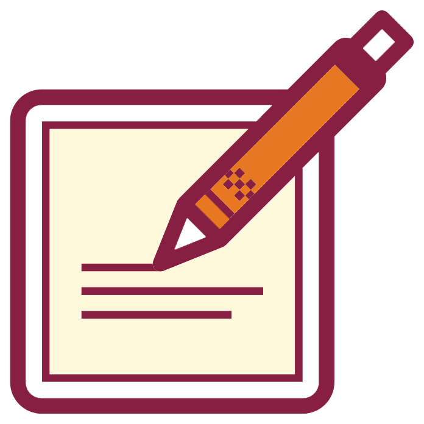
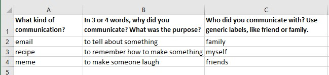

What You Will Learn and Practice
- Participate in a small, class research project by gathering and analyzing observations.. [CLO 2]
- Identify the various ways you communicate. [CLO 4]
- Collaborate with classmates in researching information. [CLO 5]
What I Want You to Do
Gather basic details on everything you do to communicate, and then contribute that information to a class collection that we will examine together.
Why I Want You to Do It
You already communicate expertly in various situations. You share information with different people, in different settings, and for different reasons. You even communicate with yourself, saving information that you will return to in the future and use in some way. We’re gathering these details to figure out what we already know and then figure out what we want to learn.
When to Do It
- Due Date: By 11:59 PM on Friday, August 27, 2021.
- End of Grace Period: If you need more time, take more time. Complete this activity by 11:59 PM on Wednesday, September 1, 2021.
Why the early end? We will build on your responses during the second week of the course. If you complete this activity later in the course, it will just be busy-work.
How You Do It
- Download the Personal Communication Notes Spreadsheet. Since we are combining all the information that everyone collects, we need to all use the same form.
- Enter all the kinds of communication that you do on the form. Add everything you can for two days, following the example below:

- Use these tips as you enter information:
- Use short answers for each column. You don’t need to explain at length.
- Summarize if it makes sense. For instance, if you and a friend send a dozen text messages, you can summarize them all in one line on the spreadsheet.
- Work to add all the ways you communicate.
- Think broadly and creatively about how you communicate. You’re not limited to things you write.
- Answer the questions below to share your tentative plan for completing work for this course.
How to Assess & Track Your Work
You track and grade your own work in this course. Be sure to complete the following tasks:
Work is always marked as either 1 for Complete or 0 for Incomplete:
- I will mark this activity Complete in Canvas Grades, usually within 24–48 hours after the end of the grace period.
- I will mark this activity Incomplete in Canvas Grades if you do not submit your log by the end of the grace period.